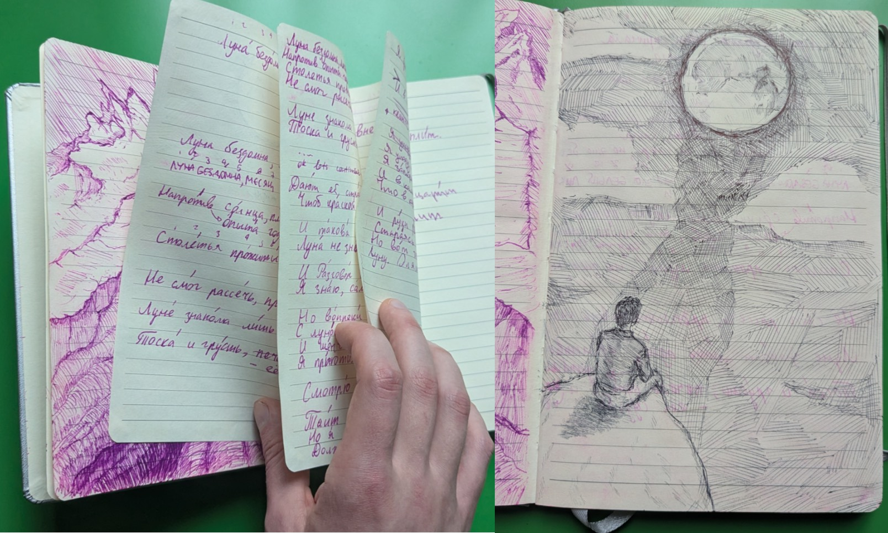

the Moon, 2021
Written in June 2021, when I was visiting a park around Wenatchee, WA. I woke up early and spent the daybreak by the water, writing.
I was 21, aimless. 2-3 months after writing Luna, I found my first serious relationship and returned to education. A complete 180.
The poem helped me understand my (first) severe disability.

Russian original
Луна, 2021
Луна бездомна, месяц стар, и этот белый лик,
Напротив опыта годов, так тускло шепчет мне.
Столетья прожиты Луной, но диск, небесный бриг!-
Не смог рассечь, проплыть сквозь шторм тревоги вне.
Луне знакома лишь одна деталь из сцены сна:
Тоска и грусть - её судьба, и вздохи красоты
Дают ей странный взгляд на мир, и нету полотна,
Чтоб краской жизни написать картину для Луны.
И такова её судьба, плоды печальных лет -
Луна не знает землю нашу - видит только сон.
И разговор с Луной, увы, не даст тебе ответ,
Я знаю - сам я говорил - и слышал эхом стон.
Но вопреки советам я отправился опять
С Луной бесшумно толковать и ночь ей отдавать;
И шепчет мне Луна всё то - что знаю я уже,
Я приютил её к себе, забрал я Лунный Свет.
Смотрю Луне в глаза, как сон, и взгляда белизна
Тоит загадочный циклон эмоций не в попад.
Но я, безумец, знаю что - нужна ты мне одна,
Должна ты мне Луна шептать, иначе прямо в ад…
…я упаду, сквозь боль и безразличие ко всем,
Я заперт в башне мысли ложной - там, где страх царит;
И в камере, за прутьями обид, я болен тем -
Что в коридоре Лунный Свет ласкает мрамор плит.
И руки ревности отчаянно тянутся вмиг!
Стараясь прикоснуться, тронуть очень нежно тень…
Но вот тюремщик вышел и закрыл окно, извёрг
Луну. Опять один, опять годами длится день.
English translation
The words/meaning are identical to the original. In both poems, each line’s last word maps one-to-one. 2026.
the Moon, 2021
The Moon is homeless, the cresent is aging, and this white face,
Contrary to the experience of the years, so dimly whispers to me.
Centuries are lived by the Moon, but the disc, the heavenly brig!-
Couldn’t cut through, sail through the storm of worries external.
The Moon knows only one detail from the scene of sleep:
Toska1 and sadness are her fate, and sighs of beauty
Give her a strange worldview, and there isn’t a canvas,
So to with the life’s colors to paint a picture for the Moon.
Such is her fate, the fruits of her sad years -
The Moon doesn’t know our earth - she only sees a dream.
And if you talk to the Moon, you won’t get an answer,
I know, I talked myself, but heard a moaning echo.
Against advice I took off to, once again,
Converse with the Moon and my night to her give;
And whispers to me the Moon everything I know already,
I gave her shelter, I took in the Moonlight.
I look into the Moon’s eyes, like a dream, and the gaze’s whiteness
Contains a mysterious cyclone of emotions out of place.
But I, a madman, know - I need you only,
You must whisper to me, Moon, or straight to hell…
…I’ll fall, through pain and indifference to everyone,
I’m locked into a false thought fortress. Where fear rules;
And in the cell, behind the bars of insult, I’m sick that,
That in the corridor - the Moonlight - caresses the marble plates.
And hands of jealousy desperately reach out in an instant,
Trying to briefly touch, hold very gently the shadow…
But the jailman came out and closed the window, rejected
The Moon. Again alone, for years lasts a day.
Discussion
A hopeless love poem. What is not to love about life? Life, the poem bitterly states, is a moon seeing people dreaming. Never the sun, never the wakened people. That’s what it was, what it is, and what it will be to me.
Original rhymes extensively: ABAB CDCD EFEF xxxx GHGH IJIJ KLKL. The middle stanza was accidental, it has no intentional rhyme. The I took in the Moonlight one.
When I say rhymes, I mean rhymes. The very first stanza’s A-rhyme sets a tone: BIE-LIY LIKH / nyeBIE-SNIY BRIKGH (white face / heavenly brig). Or for example, stanza 2 has SNAH / pawlawtNAH (decl. sleep dream, canvas) and stanza 3 follows with a mid-line sood’BAH (fate). Similarly, stanza 3 has LYET / otVYET (years, answer) and stanza 4 immediately mid-lines soVYETam, which is a declensed soVYET (advice).
Appreciated flows thus exist throughout the original text.
Footnotes
Toska (Ru.) - No translation. Multimodal: longing, despair, physically heavy boredom. With implied underlying psychological complexity.↩︎